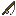

Дивні блоки
Дивні блоки
Душева глина

Душеву глину можна знайти в долинах душевого піску. Вона є джерелом звичайної глини.
Сірка
Mультиблок
Сірку можна зламати лопатою. Але будь обережним: предмети, що містять залізо (включно зі сталлю), вибухають при контакті з сіркою!
Солома

Зрізання трави дасть тобі викривлену або багряну солому. З неї можна зробити солому блок звичайним способом.


Акведук із чорнокаменю дозволяє проводити лаву на будь‑яку відстань.




Пекельні цеглини — це будівельний блок, який також використовується для Пекельного горна.


Чорнокам’яні цеглини виготовляються так само, як і звичайні цеглини, і для цього також потрібно створити предмет «цегла».